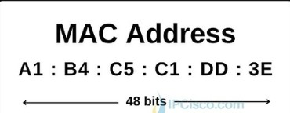
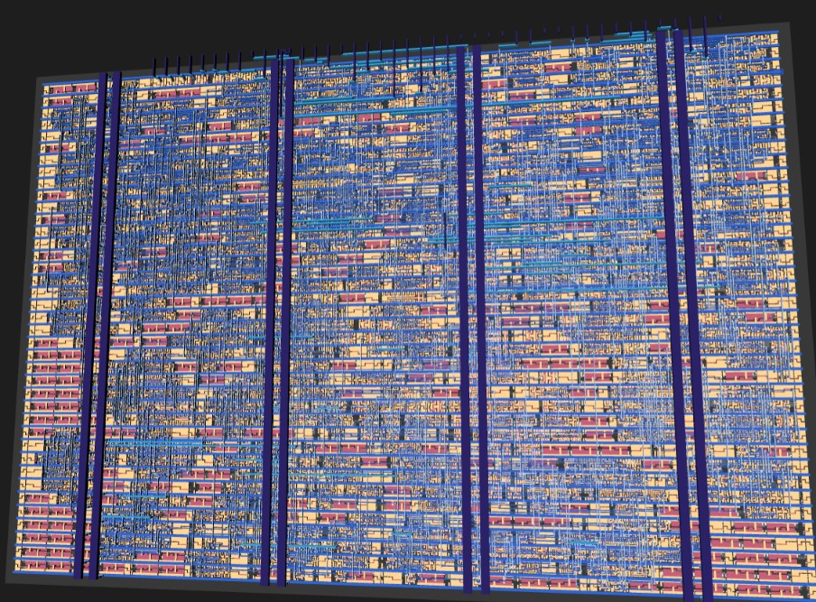

10Mbps Ethernet with TinyTapeout Format
A half-duplex 10BASE-T Ethernet ASIC, written in Hardcaml, taped out on TinyTapeout, and tested on real hardware.
1. What is Ethernet, what is 10BASE-T speed
Ethernet was developed for fast communication of data. 10BASE-T is the 10Mbps version that was created.
Here I built a half duplex 10Mbps Ethernet ASIC and ran it on the Arty A7 FPGA. It has its own PHY, has MAC-lite and a manchester encoder. Also supports 802.3 jitter specs, link pulses and CSMA/CD and CRC-32.
1.1 Half Duplex
Half duplex here means that in the Ethernet, data can move in both directions but only one at a time. This is different from full duplex where data can move both ways at the same time.
Why half duplex? Even though the industry standard is full duplex I used half duplex to reduce silicon area count and the required lesser buffer registers since data is only flowing in 1 direction. Also full duplex does not need concepts like CSMA/CD because data is almost "systolic". Collisions are impossible since data flows in both directions in their own lanes.
1.2 MAC
MAC can stand for MAC address which is a 48 bit address for all unique Ethernet port addresses, it looks like:

However, the MAC we are talking about is the hardware control layer. It sits at the second layer, data link, in the OSI model and handles data communication.
- Prepares data for transmission by adding a preamble, source and destination address and padding.
- Manages link sharing via Carrier Sense Multiple Access with Collision Detection (CSMA/CD) in half-duplex or full-duplex flow control.
1.3 CSMA/CD
This stands for Carrier Sense Media Access with Collision detection.
- Carrier sense: a device listens to the network medium before sending data to check if it is idle or not. If it is not idle then it waits before sending data.
- Multiple Access: multiple devices have access to the data and have equal rights to access it when it is free.
- Collision detection: a collision is what happens when data is sent from 2 sides at the same time. If 2 devices send data at the same time then we call it a collision and the signals get corrupted.
This is a feature used in legacy half duplex networks for managing shared communication and to coordinate data transmission.
1.4 The PHY layer
The Ethernet PHY (Physical Layer) is the hardware transceiver that translates digital data from an FPGA's Media Access Controller (MAC) into analog electrical or optical signals for transmission over a cable, and vice versa.
- It also handles encoding like 4B5B or manchester encoding to ensure reliable clock synchronisation and DC signal.
- Clock and Data Recovery (CDR): extracts the clock signal from the incoming serial data stream at the receiver end.
1.5 Manchester encoding
At 10Mbps one bit lasts 100ns. In manchester encoding every bit is split into two halves of 50ns and there is always a transition in the middle of the bit.
- 1: first half low, second half high (rising edge in the middle).
- 0: first half high, second half low (falling edge in the middle).
Since every bit has an edge the receiver can pull the clock out of the data itself, so no separate clock wire is needed. The cost is that the line switches at 20MHz to carry 10Mbps of data.
The signal is sent on one twisted pair (TD+ and TD-) and received on another (RD+ and RD-). Idle means no voltage across the pair.
1.6 The Ethernet frame
Data is not just thrown on the cable, it is wrapped in a frame:
| preamble 7 x 0x55 | SFD 0xD5 | dest 6 | src 6 | type 2 | payload 46..1500 | FCS 4 |- Preamble: 1010101010... on the wire. It gives the receiver time to lock onto the clock.
- SFD (start frame delimiter): ends in 11 instead of 10, which tells the receiver "data starts now".
- Destination and source are the 48 bit MAC addresses from 1.2.
- Type: says what is inside the frame.
- The frame has to be at least 64 bytes, so if the data is shorter it gets padded with zeros up to 60 bytes (plus 4 bytes FCS).
- FCS (frame check sequence): a CRC-32 of everything before it.
- Bytes are sent LSB first.
After the frame, 10BASE-T holds the line high for 250ns (called TP_IDL) and then goes idle.
1.7 CRC-32
CRC is a checksum that catches corrupted frames. The sender runs every bit through a 32 bit shift register with XOR feedback (polynomial 0x04C11DB7, used bit reversed as 0xEDB88320) and sends the inverted result at the end of the frame.
The neat trick: if the receiver runs the same CRC over the data and the FCS, a good frame always ends with the same constant 0xDEBB20E3 (called the residue). So the receiver does not need to know where the frame ends, it just checks if the register equals the residue.
1.8 Link pulses
When nothing is being sent, a 10BASE-T device sends a single 100ns pulse every 16ms. This is called a Normal Link Pulse (NLP). If the other side sees no pulses or frames for 50-150ms it says the link is down.
Modern laptops try to auto-negotiate with bursts of fast pulses, but when they only see NLPs they fall back to 10Mbps half duplex. This is called parallel detection, and this is how my chip would link with a normal PC.
1.9 Jitter
Edges do not arrive exactly on time. The 802.3 standard allows every edge to be off by up to ±13.5ns. That is a lot when a half bit is only 50ns. A receiver that just trusts every edge sees up to 27ns of error between 2 edges, so the receiver has to be smarter (see section 4).
2. The chip

I wrote the design in Hardcaml, which is Jane Street's hardware description library in OCaml. You describe the circuit in OCaml, simulate it in OCaml, and it generates the Verilog for you. I wrote no Verilog by hand for the chip.
The chip runs at 60MHz and is split into these parts:
tx.ml: the transmitter, a state machine and the manchester encoder. Also link pulses, collision detection and jabber.rx.ml: the receiver, a digital PLL that decodes manchester and the receive MAC.crc32.ml: one CRC-32 engine.eth_core.ml: connects TX, RX and the CRC, and has the link timer and a status byte.tt_top.ml: maps everything to the TinyTapeout pins.
Why only one CRC engine? In half duplex we never send and receive a good frame at the same time. So TX uses the CRC when it is busy and RX uses it the rest of the time. That saves 32 flip flops and all their XOR gates.
2.1 Pins
TinyTapeout gives every design the same 26 pins. I used them like this:
ui_in[7:0]: the byte to send.uo_out[7:0]: the received byte during a frame, otherwise a status byte (link up, CRC ok, collision, etc.).uio[0],uio[1]: TD+ and TD-.uio[2]: RD, the output of a comparator on the receive pair.uio[3]: TX_VALID,uio[4]: TX_READY,uio[5]: RX_VALID,uio[6]: RX_FRAME,uio[7]: LINK_UP.
The only parts outside the chip are the RJ45 jack with its transformer and one comparator.
3. Sending a frame
The host puts a byte on ui_in and raises TX_VALID. Every time TX_READY rises the chip has taken the byte and the host puts the next one. When the host drops TX_VALID the chip pads the frame and adds the CRC on its own.
Inside, TX is a state machine:
Idle -> Preamble -> Data -> (Pad) -> Fcs -> Eof -> Idle
any of these -> Jam (on collision)
Idle -> Nlp (every 16ms when nothing is sent)- A counter counts 6 clocks per bit (6 x 16.7ns = 100ns). For the first 3 clocks it sends the inverted bit and for the next 3 the bit itself. That is the whole manchester encoder.
- Before starting it waits until the line has been quiet for 9.6us (the inter packet gap). This is the carrier sense part of CSMA/CD.
- If it hears something on RD while it is sending, that is a collision. It sends a 32 bit jam pattern and stops. The host then waits a random time and tries again (backoff).
- Jabber: if something goes wrong and it keeps sending for more than ~34ms it cuts itself off.
- TD+ and TD- come straight out of flip flops so there are no glitches on the line.
4. Receiving a frame
This was the hardest part. The receiver has to find the middle-of-bit edges even with jitter, with its own clock that is not exactly the same as the sender's.
4.1 Sampling on both edges
RD is sampled on the rising and the falling edge of the clock. That gives 12 samples per bit (every 8.3ns) instead of 6 without needing a faster clock.
4.2 Digital PLL
- The receiver keeps a "phase" that says where in the bit it thinks it is. It is stored one-hot in a 12 bit ring, so checking "are we in slot k" is just 1 bit.
- The first edge on an idle line starts the phase.
- After that, every edge near the expected middle of the bit votes "early" or "late". Only when enough votes add up does the phase move by one slot. So it follows the average edge position and not every jittery edge.
- In the first few bits it moves after every vote so it locks quickly in the preamble.
- Edges near the bit boundary are ignored since they carry no data.
- The bit value is just the direction of the middle edge: rising = 1, falling = 0.
- Two bits in a row with no middle edge means the frame is over.
4.3 Receive MAC
After the PLL it is simple. Wait for the SFD (the 11), shift bits into bytes, send each byte out on uo_out and run it through the CRC. At the end of the frame the status byte shows CRC_OK if the register holds the residue 0xDEBB20E3.
The link timer is also here: every link pulse or frame sets LINK_UP and after ~69ms of silence it drops.
5. Testing it
I tested the chip a lot before hardening because you can not fix silicon after.
- Reference model: a separate pure OCaml model that builds the exact bits a frame should have on the wire. TX is checked bit for bit against it, so a CRC bug can not pass by agreeing with itself.
- Two chips on a cable: a simulation with two chips with different clocks (a few ppm apart), a cable with delay and random jitter, and a host model. Tested CRC errors, collisions, deference and the link going up and down.
- Constrained random: random frame lengths, clock offsets, jitter and traffic from both sides, checked against the model until every coverage bin was hit. 36 scenarios, 152 frames, 0 mismatches.
- Jitter sweep: every frame is received up to the ±13.5ns spec limit. At 15ns it still gets 89 out of 96, so it gets worse slowly instead of just breaking.
- Formal proofs: using yosys k-induction I proved 4 properties for all time, for example TD+ and TD- are never both on and no pulse shorter than 50ns ever reaches the line.
- Gate level: cocotb tests on the final netlist after layout, 4/4 pass.
Bugs this found: the pad counter wrapped at 64, the jabber cut-off could make a short pulse (found by formal), and the PLL could apply one correction twice.
6. TinyTapeout GDS
TinyTapeout lets you put a small design on a shared chip. I hardened it with OpenLane 2 on the sky130 process into a 1x1 tile (161 x 111.52 um).
- 1191 cells, 193 flip flops, 10401 um² of cell area.
- Setup slack +4.95ns at 60MHz on the worst corner, so it could run at around 85MHz.
- DRC 0, LVS 0, antenna 0.
- 0.96mW power.
60MHz is enough because I need 12 samples per bit for the jitter tolerance and the double edge sampling gives me that.
7. UPduino
I also built it for the UPduino v3 (iCE40 FPGA). The iCE40 is slow so getting 60MHz took some work: the one-hot phase, deciding state machine transitions one clock early, and registering the CRC controls. It reached 60.35MHz with 327 LUTs. It builds but I have not tested it on the board yet since it needs a jack and comparator wired up.
8. Arty A7: real frames on a real PC
The Arty A7 has its own RJ45 port, but the jack is not connected to the FPGA directly. It goes through a PHY chip (TI DP83848) which does the manchester encoding, link pulses and clock recovery itself. So on the Arty my chip's PHY part is not used, the FPGA only has to be the MAC. It still uses the same CRC module and the same frame format as the chip.
8.1 MII
The FPGA talks to the PHY chip over MII:
- TX_CLK and RX_CLK: clocks from the PHY. 2.5MHz at 10Mbps and 25MHz at 100Mbps.
- TXD[3:0] and TX_EN: 4 bits (a nibble) per clock going out.
- RXD[3:0] and RX_DV: a nibble per clock coming in.
- CRS: carrier sense, someone is talking on the cable.
- MDC and MDIO: a slow 2 wire bus to read and write the PHY's registers.
8.2 The first version failed
My first try kept the chip in the middle. A bridge converted the nibbles into manchester, fed it to my chip, and converted back. It ran on a 60MHz clock and sampled TX_CLK and RX_CLK like normal data.
It did not work. Nothing showed up in Wireshark and nothing was received. The reason:
- Windows linked at 100Mbps, where TX_CLK and RX_CLK are 25MHz. You can not follow a 25MHz clock by sampling it at 60MHz.
- It only could have worked if my MDIO write forcing 10Mbps worked, and there was no way to see on the board if it did.
- Three conversions were based on how I thought the PHY behaves, and none of them could be seen on the board.
Lesson: in MII, TX_CLK and RX_CLK are the clocks. That should have been caught at design time, not on hardware.
8.3 The second version
I rewrote it as a proper MII MAC:
- TX runs on TX_CLK. It sends 16 preamble nibbles (fifteen 0x5 and then 0xD), 120 data nibbles low nibble first, 8 CRC nibbles and then a gap. It waits while CRS is high.
- RX runs on RX_CLK. It skips the preamble until 0xD, runs every nibble through the CRC, and when RX_DV drops the frame is good if the CRC equals the residue.
- In 10Mbps half duplex the PHY copies what we send back onto RXD. So if the source address is ours, it is our own echo and not a frame from the PC.
- MDIO sets the PHY to advertise 10Mbps only, then keeps reading the link status, speed and duplex back and shows them on the LEDs. So if MDIO fails I can see it.
- The three clocks (25MHz system clock, TX_CLK, RX_CLK) pass signals to each other through toggles and 2 flip flop synchronisers.
- Since the logic runs on the PHY's clocks it works at 10 or 100Mbps.
Every second or so it sends this frame:
- Destination: ff:ff:ff:ff:ff:ff (broadcast).
- Source: 02:48:43:31:30:54 (the bytes spell "HC10T").
- Type: 0x88B5 (local experimental).
- Payload: "Hello from Hardcaml 10BASE-T #" and a number that goes up every frame.
Vivado met timing (WNS +6.845ns) and it used 336 LUTs and 311 flip flops.
8.4 It works
First try only LD4 was blinking. Turns out the Ethernet cable was not pushed in all the way into the laptop. After pushing it in, Wireshark showed:
28 27.082061400 02:48:43:31:30:54 Broadcast 0x88b5 60 Local Experimental Ethertype 1with "Hello from Hardcaml 10BASE-T #" in the payload and the number going up every frame.
- Wireshark shows 60 bytes and not 64 because the network card checks and removes the 4 CRC bytes. A frame with a wrong CRC gets dropped, so seeing it at all means my CRC is right.
- LD5 blinks when the laptop sends its own broadcasts, so the FPGA is receiving and checking real frames too.
- LD6 and LD7 are on: link is up and it is 10Mbps, read from the PHY over MDIO.
- Windows also shows the adapter as Up at 10 Mbps.
9. What is left
- The Arty proves the frame format, padding and CRC on real hardware, but not my manchester encoder and PLL, because the PHY chip does that part there.
- To test those on hardware I need to wire a jack and comparator to the UPduino, or get the TinyTapeout chip back.
- The chip does not do full duplex, auto-negotiation or address filtering, and the backoff is done by the host.